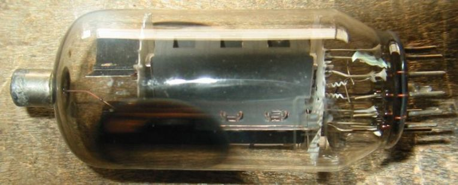
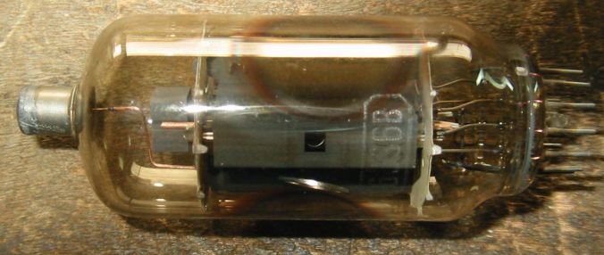
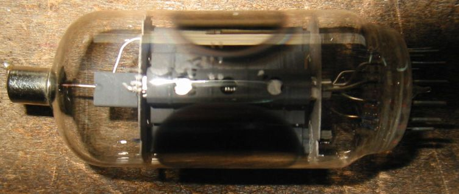
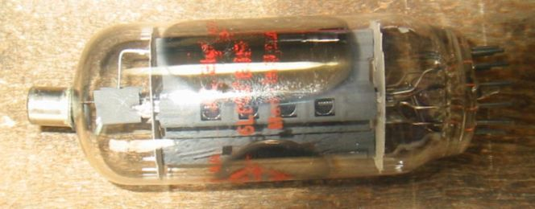
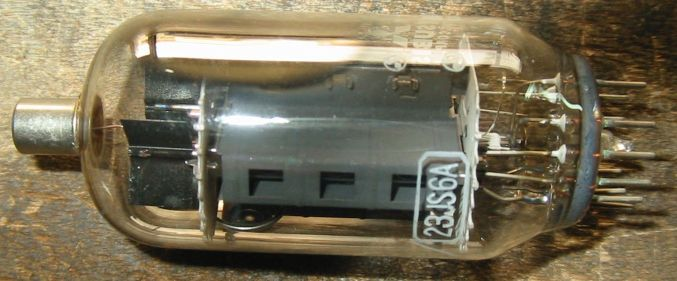
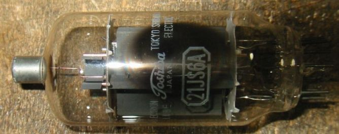
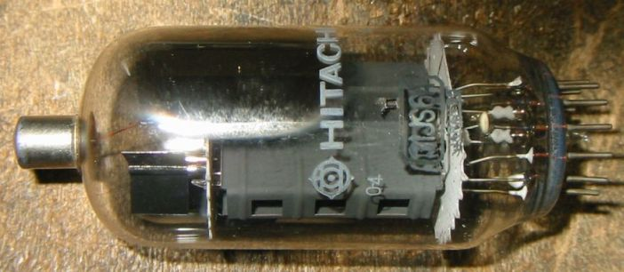

6JS6について
6JS6に初めて出会ったのは、アマチュア無線用のSSB送信機の終段管としてであった。
長いブランクを経て無線を再開したときには、AMの送信機を自作してという時代ではなく、SSBの
無線機が安くふんだんに出回っている時代でした。
その送信機に入っていたのは6JS6Aでしたが、予備の球を秋葉原でさがしたところ、6JS6Aは
すでに製造されてないないということで、買えたのは6JS6Cでした。
無線機に取り付けるとCpgなどが大きくなっているせいで、中和を取り直す必要がありましたが、
問題なく動作してくれました。

6JS6シングルSGドライブアンプ
6CD6シングルSGドライブアンプにコンパクトロン用の12pinソケットを付け足して、6JS6Aを動作
させてみました。
スクリーングリッド・ドライブといっても、実際にはコントロールグリッドにも、ある程度信号を入れてあり、
2つのグリッドが同時に励振されています。ドライバー管の1/2・12BH7Aカソード・フォロワーの出力を
適当に抵抗で分割して、スクリーングリッドには数10V、コントロールグリッドには10数Vの電圧が加わる
ようにしてあります。カソードバイアスもかけてあって現在24V位ですから、コントロールグリッドはプラスまで
は振らないようになっています。
今まで6JS6ではSSBかCWの信号しか扱ったことがなかったのですが、初めて音楽を鳴らしています。
B+は400Vくらいありますので、カソード電流65mから計算すると、プレート損失は2０W以上になっています。
スクリーングリッドは80Vで3mA位ですから、TV水平出力管で問題になるスクリーングリッドについては、
この使い方ではまったく問題ありません。
アンプをステレオ用に作ってしまうと、いろいろなことを事件するのに手間が増えるので、これはあえてシングル
にしておきます。それによく聴くソースが、古いLPレコードをCDに焼きなおしたようなものが多いので、あまり
困らない、というよりちょうどよいということになります。

6JS6Bはあまり製造されなかったようで、珍しいです。
6JS6B

YaesuのFT401などに使われていた球です。
6JS6C

National Electronic 6LB6/6JS6C
6LB6/6JS6C
Ef/If=6.3V/2.25A、Ep/Pp=990V/30W、Esg/Psg=200V/5W、Gm=13400、μ2=

23JS6Aトランスレス用
23JS6A

21JS6Aトランスレス用
21JS6A

31JS6Aトランスレス用
31JS6A

TV水平出力管(コンパクトロン)のページに戻る